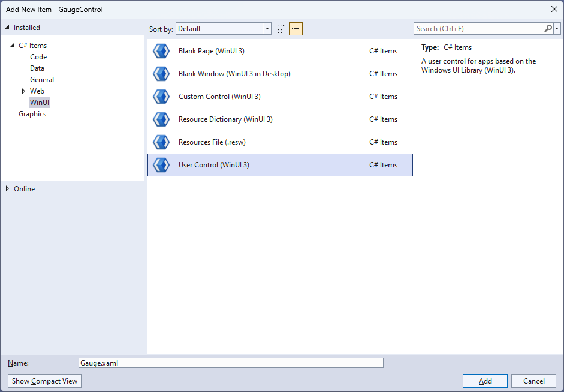
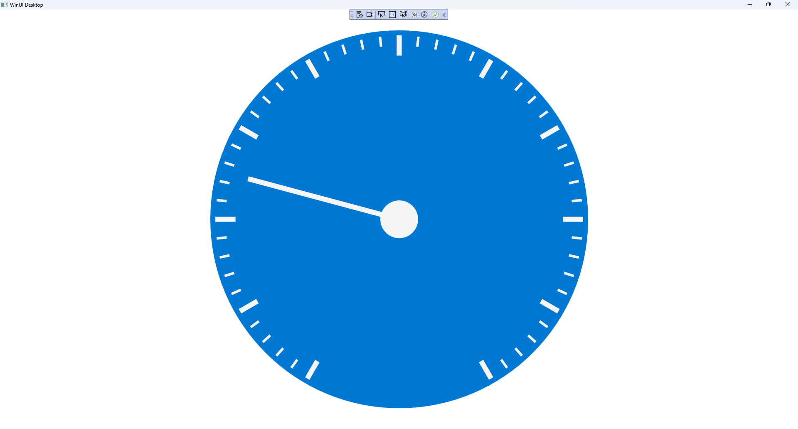

Gauge Control
Learn creating a Gauge Control using Windows App SDK with this Tutorial
Gauge Control shows how to create a Control that can be used as a Gauge using Windows App SDK.
Step 1
Follow Setup and Start on how to get Setup and Install what you need for Visual Studio 2022 and Windows App SDK.


Step 2
Then in Visual Studio within Solution Explorer for the Solution, right click on the Project shown below the Solution and then select Add then New Item…

Step 3
Then in Add New Item from the C# Items list, select WInUI and then select User Control (WinUI 3) from the list next to this, then type in the name of Gauge.xaml and then Click on Add.

Step 4
Step 5
In the XAML for Gauge.xaml there will be some XAML for a Grid, above Grid, type the following XAML:
<Viewbox>
<Canvas Name="Display" Height="300" Width="300" Loaded="Load"/>
</Viewbox>
This XAML contains a Viewbox which will Scale a Canvas with a Loaded event handler of Load.
Step 6
Step 7
You will now be in the View for the Code of Gauge.xaml.cs near the top of the Code,
below the final using statement you will need to type the following using statement:
using Microsoft.UI.Xaml.Shapes;
Step 8
Then while still in the View for the Code of Gauge.xaml.cs type the following Code
below the end of the Constructor of public Gauge() { ... }:
private Rectangle _needle;
private double _diameter = 0;
// Transform Method
// Markers Method
// Layout, Indicator & Load Methods
// Dependency Properties
// Properties
The class for Gauge represents the User Control for the Gauge and includes a
Rectangle that will be used to represent the needle of the Gauge along with a double for the diameter of the Gauge.
Step 9
While still in the class of Gauge after Comment of // Transform Method type the following Code:
private TransformGroup Transform(double angle, double x, double y)
{
var transformGroup = new TransformGroup();
var firstTranslate = new TranslateTransform()
{
X = x,
Y = y
};
transformGroup.Children.Add(firstTranslate);
var rotateTransform = new RotateTransform()
{
Angle = angle
};
transformGroup.Children.Add(rotateTransform);
var secondTranslate = new TranslateTransform()
{
X = _diameter / 2,
Y = _diameter / 2
};
transformGroup.Children.Add(secondTranslate);
return transformGroup;
}
This Method will create a TransformGroup to rotate elements to be used for the Gauge.
Step 10
While still in the class of Gauge after Comment of // Markers Method type the following Method:
private void Markers(Canvas canvas, double thickness)
{
var inner = _diameter;
var markers = new Canvas()
{
Width = inner,
Height = inner
};
for (int i = 0; i < 51; i++)
{
var marker = new Rectangle()
{
Fill = Foreground
};
if ((i % 5) == 0)
{
marker.Width = 4;
marker.Height = 16;
marker.RenderTransform = Transform(i * 6, -(marker.Width / 2),
-(marker.Height * 2 + 4.5 - thickness / 2 - inner / 2 - 16));
}
else
{
marker.Width = 2;
marker.Height = 8;
marker.RenderTransform = Transform(i * 6, -(marker.Width / 2),
-(marker.Height * 2 + 12.75 - thickness / 2 - inner / 2 - 16));
}
markers.Children.Add(marker);
}
markers.RenderTransform = new RotateTransform()
{
Angle = 30,
CenterX = _diameter / 2,
CenterY = _diameter / 2
};
canvas.Children.Add(markers);
}
This Method will create the set of small and large markers to be displayed on the Gauge
Step 11
While still in the class of Gauge after Comment of // Layout, Indicator & Load Methods type the following Methods:
private void Layout(Canvas canvas)
{
canvas.Children.Clear();
_diameter = canvas.Width;
var face = new Ellipse()
{
Height = _diameter,
Width = _diameter,
Fill = Fill
};
canvas.Children.Add(face);
Markers(canvas, face.StrokeThickness);
_needle = new Rectangle()
{
Width = Needle,
Height = (int)_diameter / 2 - 30,
Fill = Foreground
};
canvas.Children.Add(_needle);
var middle = new Ellipse()
{
Height = _diameter / 10,
Width = _diameter / 10,
Fill = Foreground
};
Canvas.SetLeft(middle, (_diameter - middle.ActualWidth) / 2);
Canvas.SetTop(middle, (_diameter - middle.ActualHeight) / 2);
canvas.Children.Add(middle);
}
private void Indicator(int value)
{
Layout(Display);
var percentage = value / (double)Maximum * 100;
var position = (percentage / 2) + 5;
_needle.RenderTransform = Transform(position * 6,
-Needle / 2, 4.25);
}
private void Load(object sender, RoutedEventArgs e) =>
Indicator(Value);
There will also be some Errors as these refer to Properties that will be added in the next few steps.
Layout will create the look-and-feel of the Gauge and uses the Method for Markers along with creating the centre point and needle for the Gauge.
The Method of Indicator will use Layout along with calculating the position of the needle for the Gauge and Load will be used when the Canvas of
the User Control is loaded and will call the Method of Indicator.
Step 12
While still in the class of Gauge after Comment of // Dependency Properties type the following Dependency Properties:
public static readonly DependencyProperty FillProperty =
DependencyProperty.Register(nameof(Fill), typeof(Brush),
typeof(Gauge), null);
public static readonly DependencyProperty NeedleProperty =
DependencyProperty.Register(nameof(Needle), typeof(int), typeof(Gauge),
new PropertyMetadata(2));
public static readonly DependencyProperty ValueProperty =
DependencyProperty.Register(nameof(Value), typeof(double), typeof(Gauge),
new PropertyMetadata(25));
public static readonly DependencyProperty MinimumProperty =
DependencyProperty.Register(nameof(Minimum), typeof(int), typeof(Gauge),
new PropertyMetadata(0));
public static readonly DependencyProperty MaximumProperty =
DependencyProperty.Register(nameof(Maximum), typeof(int), typeof(Gauge),
new PropertyMetadata(100));
There will still also be some Errors as these refer to Properties that will be added in the next step.
These Dependency Properties refer to various Properties of the Gauge that can be customised for the User Control.
Step 13
While still in the class of Gauge after Comment of // Properties type the following Properties:
public Brush Fill
{
get { return (Brush)GetValue(FillProperty); }
set { SetValue(FillProperty, value); }
}
public int Needle
{
get { return (int)GetValue(NeedleProperty); }
set
{
SetValue(NeedleProperty, value);
Indicator(Value);
}
}
public int Value
{
get { return (int)GetValue(ValueProperty); }
set
{
if (value >= Minimum && value <= Maximum)
{
SetValue(ValueProperty, value);
Indicator(value);
}
}
}
public int Minimum
{
get { return (int)GetValue(MinimumProperty); }
set { SetValue(MinimumProperty, value); }
}
public int Maximum
{
get { return (int)GetValue(MaximumProperty); }
set { SetValue(MaximumProperty, value); }
}
Any Errors should now be resolved, if you continue to get them check all previous steps to see if you have missed anything.
These Properties are for values for the User Control such as the Minimum or Maximum values for the Gauge.
Step 14
Step 15
In the XAML for MainWindow.xaml there will be some XAML for a StackPanel, this should be Removed:
<StackPanel Orientation="Horizontal"
HorizontalAlignment="Center" VerticalAlignment="Center">
<Button x:Name="myButton" Click="myButton_Click">Click Me</Button>
</StackPanel>
Step 16
While still in the XAML for MainWindow.xaml above </Window>, type in the following XAML:
<local:Gauge Margin="50" Value="25" Foreground="WhiteSmoke" Needle="4"
Fill="{ThemeResource SystemControlHighlightAccentBrush}"/>;
This XAML contains the User Control of Gauge with various Properties including Value and Needle.
Step 17
Step 18
In the Code for MainWindow.xaml.cs there be a Method of myButton_Click(...) this should be Removed by removing the following:
private void myButton_Click(object sender, RoutedEventArgs e)
{
myButton.Content = "Clicked";
}
Step 19
Step 20
Once running you will see the Gauge Control displayed, with a Value which can be changed in the XAML to show the Needle in a different position.

Step 21